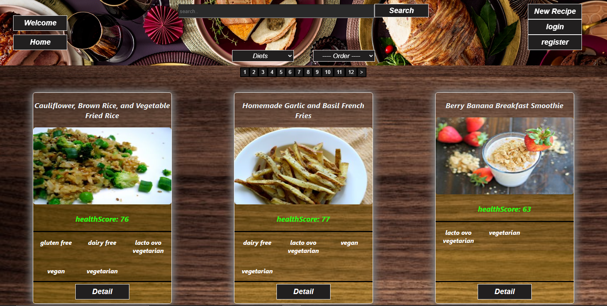
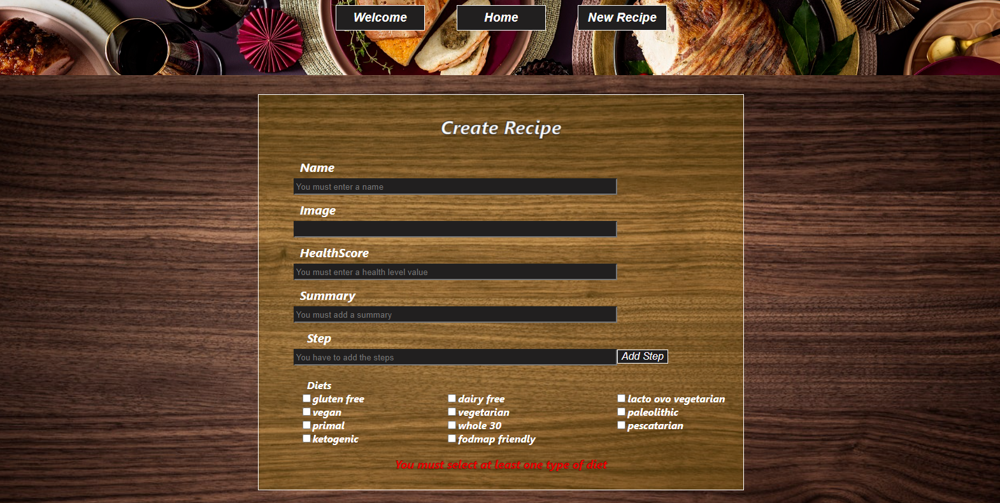
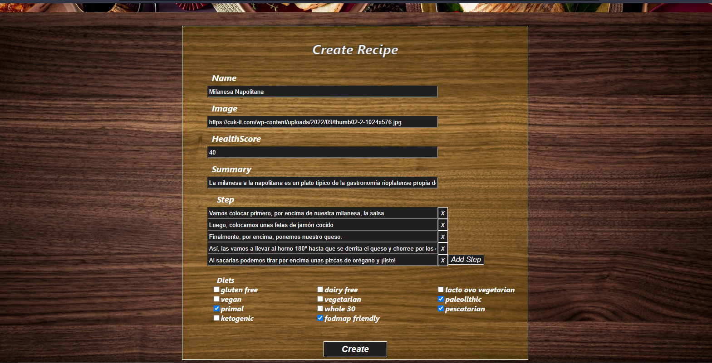
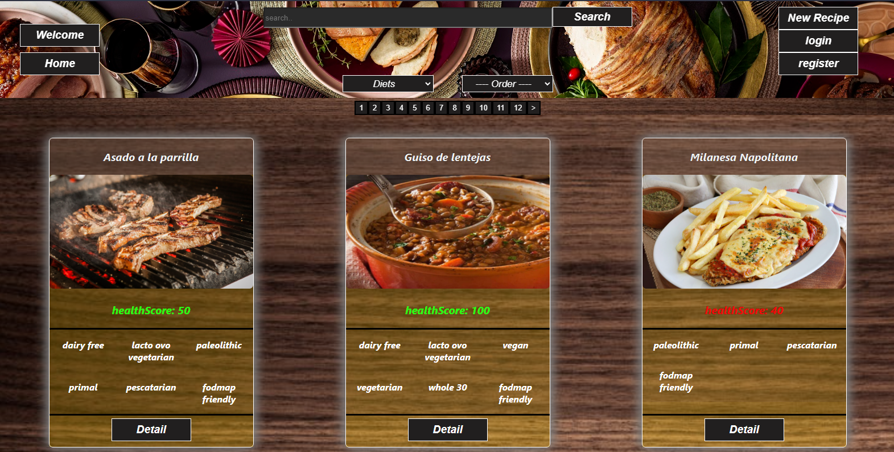
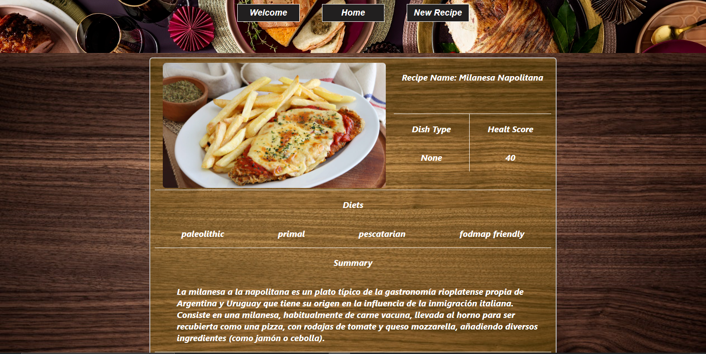
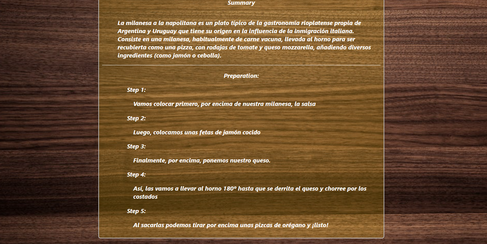

FOOD-APP

La FoodApp permite visualizar 9 recetas por paginas donde se muestran su imagen, su nombre, el nivel saludable y el tipo de dieta. En el detalle de cada receta se muestran la descripción de la misma y los pasos de preparación.
También la App permite hacer búsquedas de la receta por nombre, filtrar por tipo de dieta, ordenar alfabéticamente o por nivel saludable.
El usuario puede crear una receta a través de un formulario controlado, para evitar que se ingresen datos erróneos.
Este Proyecto se realizo con las siguientes tecnologías:
- FrontEnd:
- React
- Redux
- CSS Puro
- BackEnd:
- Node.js
- Express
- Database:
- PostgreSQL
- Sequelize
- Control de Versión:
- Git y GitHub
Si le interesa conocer mas de la App puede ingresar haciendo click AQUÍ.
Y si le interesa ver el código puede ingresar haciendo click AQUÍ.
Algunas imágenes del proyecto
Home:
Formulario para crear una receta:
 Visualización de la receta creada en el Home:
Detalle de una receta:
 